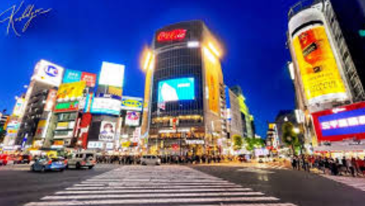
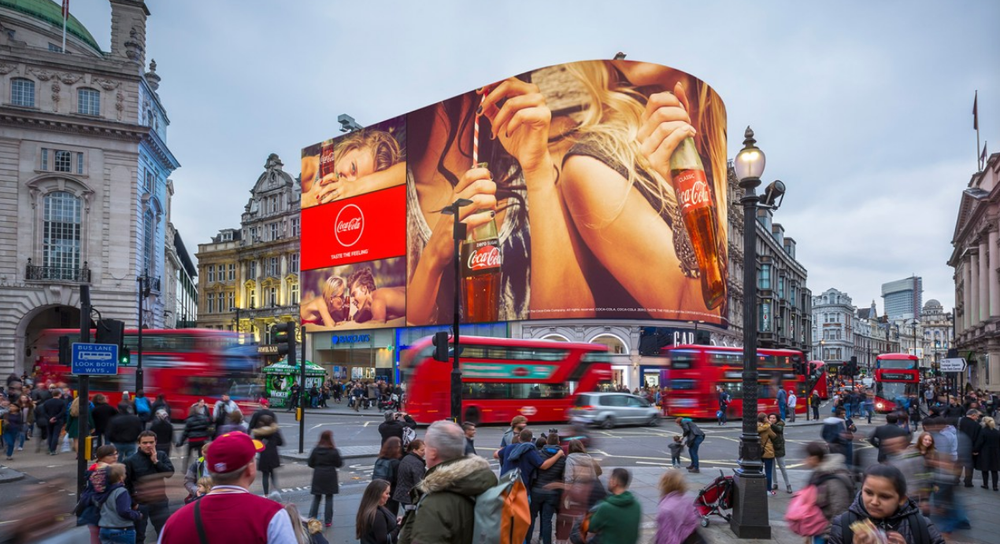
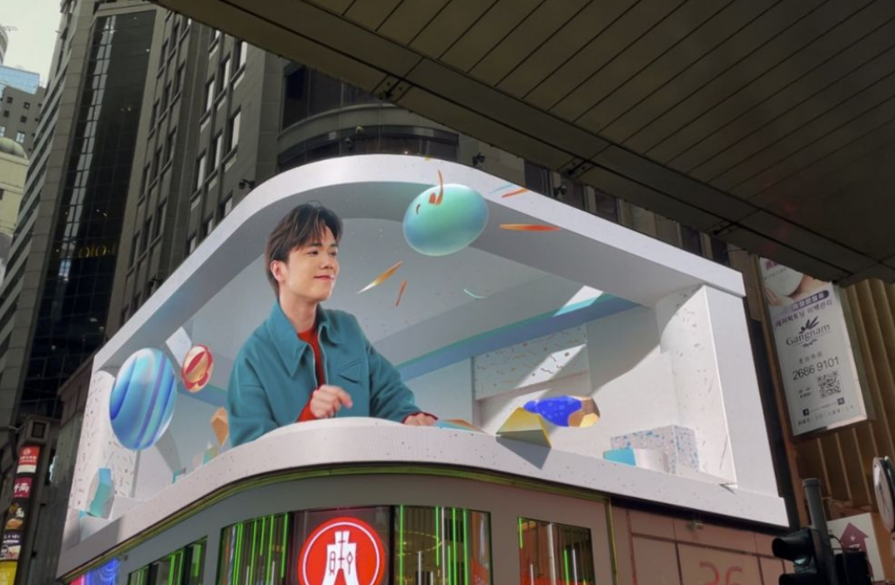
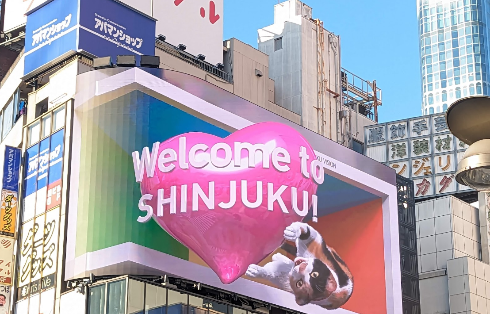
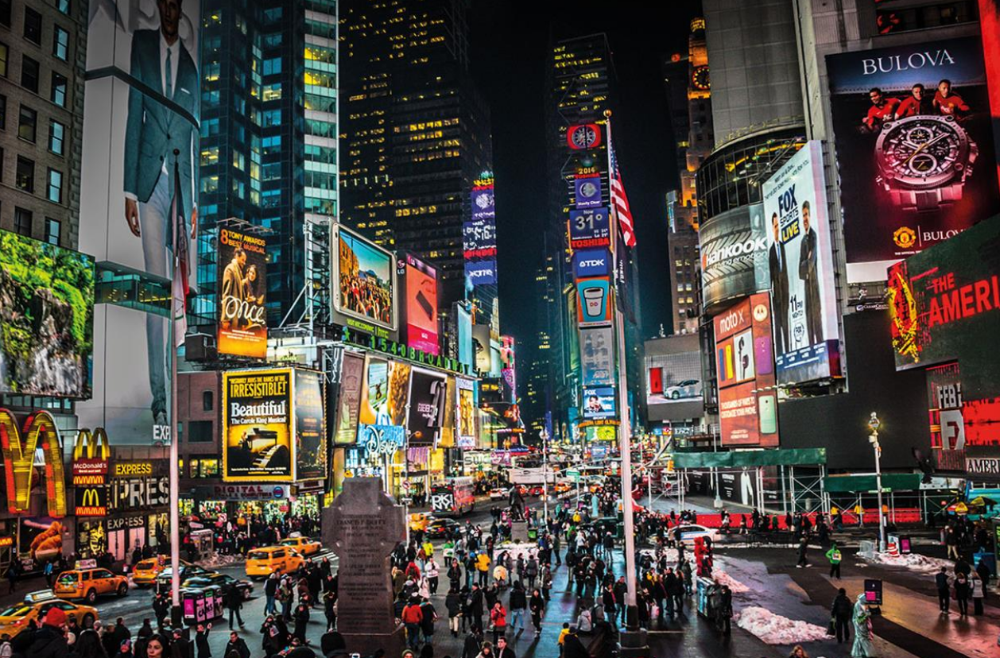

One of the main motifs of cyberpunk media is the prominence of technology and lights. The panels of ads that help light up the cityscape take great inspiration from modern cities today, such as Tokyo and NYC. The giant screens of Shibuya Crossing and Times Square once heralded a new age of technology. They fill your gaze with whatever the highest bidder wants — a new soda product, a political campaign, or an ominous yet enticing invitation to live in a reality free from problems. The pervasiveness of these ads and this technology continue to creep into our everyday lives and further blur the line between reality and cyberpunk. Meanwhile, the neon lit streets of cities in Hong Kong and Japan were adapted to the cyberpunk landscape in a way that detract citizens away from seeing how corrupt and decrepit the streets really are. It gives the people a means of escape, to forget about the sad and shitty life they currently live in and instead chase empty fulfillment. It's unhealthy and won't lead to real change, but most don't seem to mind.
The stretch of shining signs that light up the sky at night is not as far-fetched as one can think. Cities like “London, New York, Tokyo revolve around the hyper-communication of advertising, branding, and style,” as stated in a paper on cyberpunk cities by Carl Abbott. In being centers for this sense of connectedness, large corporations take advantage of the heavy tourism and coverage of the media, decorating the cities with signs and architecture in such a way that you can't help but look in awe at their features. In Tokyo, Shinjuku, similar to Hong Kong in China, features ever-expanding technology with 3D billboards welcoming people to the town with a glorious spectacle, while in Shibuya, stacks of billboards and posters advertise consumer products and forms of media alike accumulate above the iconic crossing. In New York, Times Square, always featured during New Year's, is filled with tall skyscrapers decorated with screens displaying advertisements for different goods alongside a clock, encouraging people to take pictures and look around for the sake of it being a tourist spot. Finally, London itself incorporates these innovative new technologies into the old architecture of the past in Picadilly Square, creating a bridge between past and present while also using the novel innovations as the main centerpiece rather than older structures. With each of these real-world examples, ads stand out and work to make a memorable experience for the consumer, encouraging them to buy a product in ways that make the mind more intrigued and interested in the content provided. With a consumer-driven avenue in mind, big corporations and companies strive to make the most appealing image to put up on the screen or sign to put up to continuously succeed in competition with other companies.




